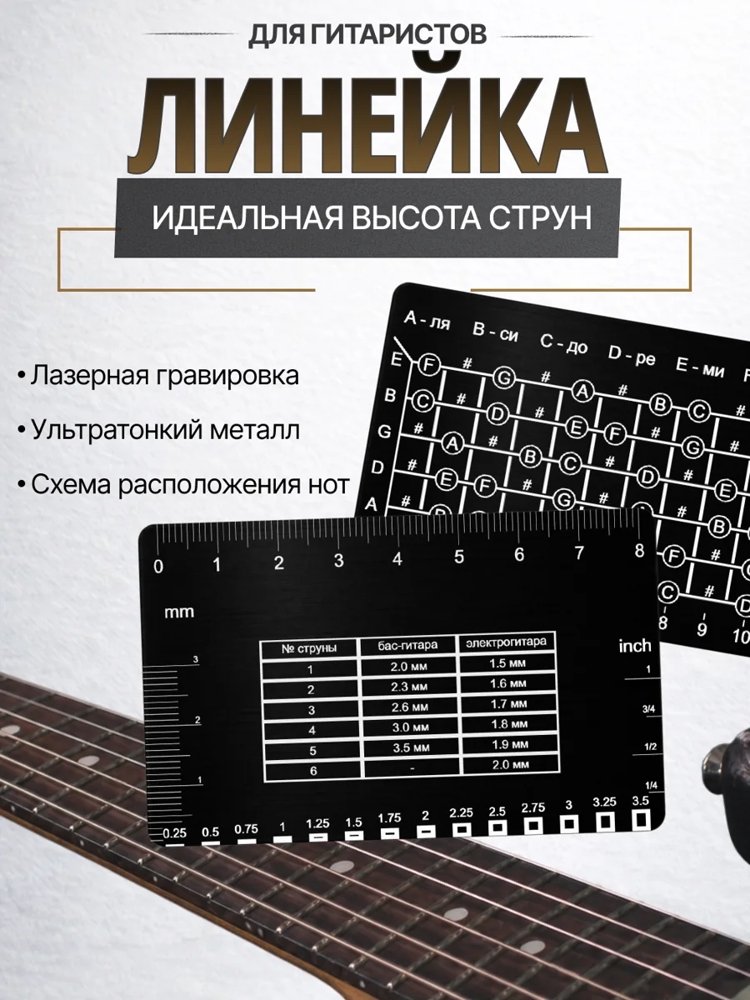
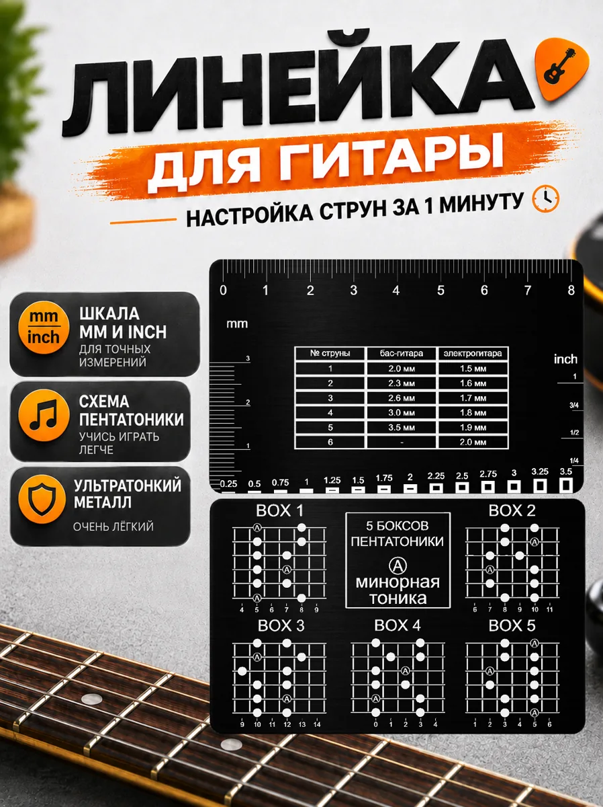

ГИТАРНЫЕ ЛИНЕЙКИ
Инструменты для измерений и настройки гитары. Две модели: с картой нот и с пятью боксами пентатоники. Общая компактная металлическая конструкция для измерения высоты струн.
МОДЕЛИ И ВАРИАНТЫ
Выбери линейку с нужной музыкальной схемой. У каждой модели своя галерея, а технические фотографии используются для обеих.
ЛИНЕЙКА С НОТАМИ
Разметка высоты струн и схема расположения нот на грифе — удобная шпаргалка для настройки и практики.

КОМПАКТНЫЙ ИНСТРУМЕНТ 3 В 1
Линейка для измерения высоты струн, музыкальная схема и таблица ориентиров для настройки — на одной металлической пластине.
ЛИНЕЙКА С ПЕНТАТОНИКОЙ
Разметка для измерения высоты струн и пять боксов минорной пентатоники ля (Am) под рукой.

КОМПАКТНЫЙ ИНСТРУМЕНТ 3 В 1
Линейка для измерения высоты струн, музыкальная схема и таблица ориентиров для настройки — на одной металлической пластине.
Напиши в сообщество BigNest ВКонтакте. Новые модели будем добавлять на эту страницу по мере появления фотографий и описаний.